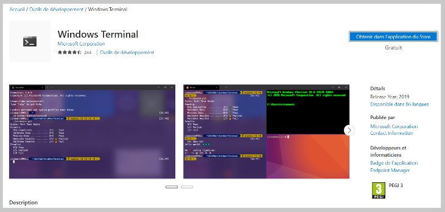
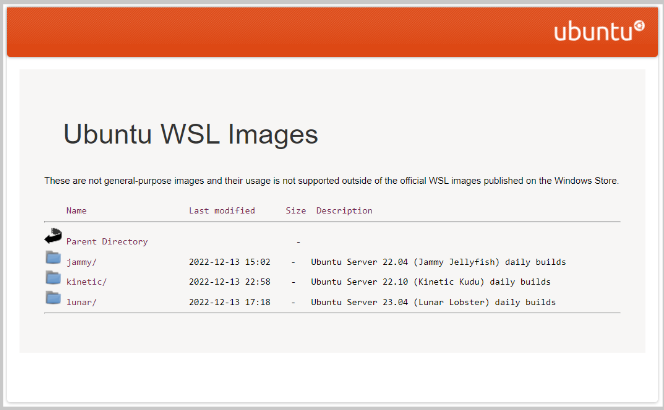
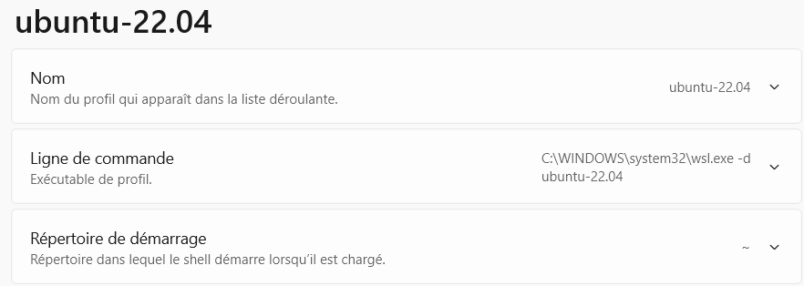
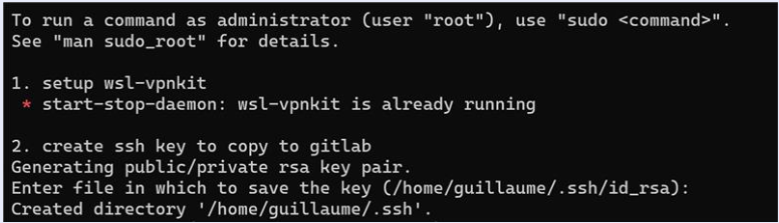
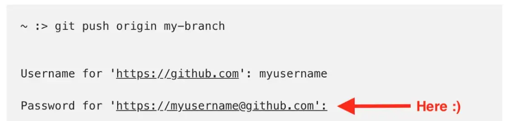
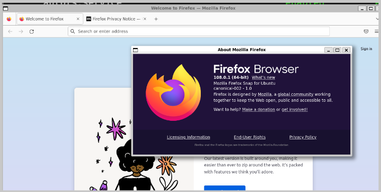
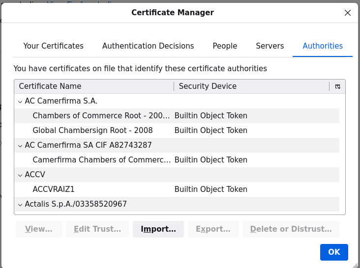
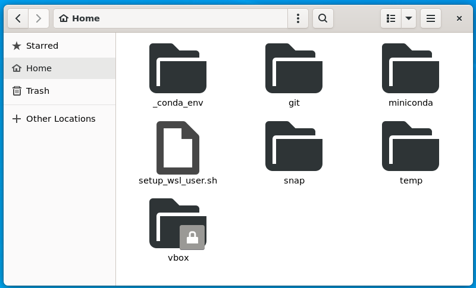
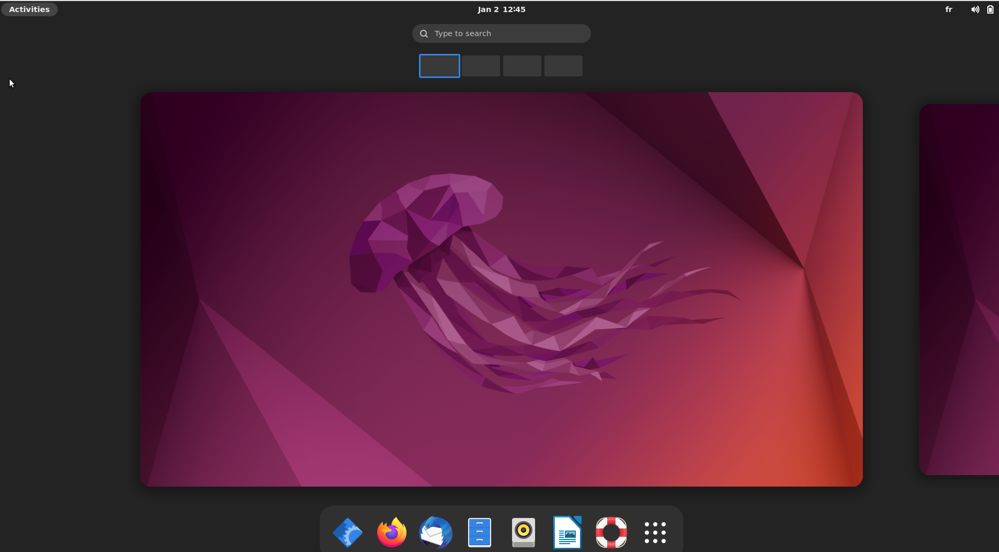

#my vbox.autofs file
!cat /etc/vbox.autofsjanus -fstype=drvfs,uid=1000,gid=1000 :Z:As an example from T15Gen2, corporate mastered.
This procedure needs admin rights on 2 steps (install nvidia drivers, activate wsl)
And if based on WSL from Windows store (wsl --version>=1.0), lots of new features such as systemd, snap, integrated display, etc. Detailed in WSL2 from Windows Store
Just install Windows Terminal from Windows Store at https://aka.ms/terminal

Download from https://developer.nvidia.com/cuda/wsl
(Dec-22: this file 527.56-desktop-win10-win11-64bit-international-dch-whql.exe)
Download from https://cloud-images.ubuntu.com/daily/server/wsl/
This address may change (search for « cloud wsl ubuntu images »)

(Dec-22: this file ubuntu-jammy-wsl-amd64-wsl.rootfs.tar.gz)
as admin, install the driver
as admin, open windows terminal, and run
wsl --install
wsl --set-default-version 2following instructions from install ubuntu 22.04 on WSL # Automatic setup.
And here are the steps
Create 2 folders: C:\wsl\Ubuntu-22.04\download, C:\wsl\Ubuntu-22.04\instance
Move ubuntu-jammy-wsl-amd64-wsl.rootfs.tar.gz in C:\wsl\Ubuntu-22.04\download
Copy scripts setup_wsl_root.sh and setup_wsl_user.sh to C:\wsl\Ubuntu-22.04\download
Copy wsl-vpnkit to C:\wsl\Ubuntu-22.04\download (see https://dev.michelin.com/wsl2/fundamentals for more details)
Install wsl-vpnkit from Windows Terminal:
wsl --import wsl-vpnkit $env:USERPROFILE\wsl-vpnkit C:\wsl\ubuntu-22.04\download\wsl-vpnkit.tar.gz
wsl -d wsl-vpnkit
wsl -d wsl-vpnkit service wsl-vpnkit startInstall ubuntu-lts from Windows Terminal:
wsl --import ubuntu-22.04 C:\wsl\ubuntu-22.04\instance C:\wsl\ubuntu-22.04\download\ubuntu-jammy-wsl-amd64-wsl.rootfs.tar.gz
# close windows terminal / launch it (ubuntu-22.04 entry should be added within it)
wsl -d ubuntu-22.04 # or launch from Windows Terminal menu
cd
cp /mnt/c/wsl/Ubuntu-22.04/download/setup_wsl_* ~/
chmod +x setup_wsl_root.sh
./setup_wsl_root.shProvide username, password and quit session with Ctrl-D
From Windows Terminal, stop wsl with wsl -t ubuntu-22.04, a new profile for ubuntu-22.04 should have been automatically created in Windows Terminal

Start ubuntu-22.04 by clicking the profile in Windows Terminal
Should start with something like

Step 2: accept default entries (type enter). Add the generated key to gitlab > preferences > SSH keys. And then resume.
At that stage this is a fully operating image of ubuntu (internet, apt)
If running wsl version > 1.0, you can activate systemd
Modify /etc/wsl.conf with
[boot]
systemd=trueAnd restart wsl image (wsl -t ubuntu-22.04)
Test that it works by running
systemctl list-unit-files --type=service
I have explained how and why to do this step at keep dotfiles in git
wget --no-check-certificate --content-disposition -O - https://raw.githubusercontent.com/castorfou/blog/master/files/setup_wsl_00_config_files_in_git.sh | bash
source ~/.bashrcTODO: take branch name as a parameter. Meanwhile download the script and update branch name to something new
This is explained at git-credential-manager repo
wget --no-check-certificate --content-disposition -O - https://raw.githubusercontent.com/castorfou/blog/master/files/setup_wsl_06_git_credential_manager.sh | bashYou need to create a personal access token in github.
And when pushing to a github repo, use this token as the password

Because I keep secured data within my secured disks mounted in windows (Z:, Y:, …)
wget --no-check-certificate --content-disposition -O - https://raw.githubusercontent.com/castorfou/blog/master/files/setup_wsl_01_automount_secured_vbox.sh | bashModify /etc/vbox.autofs to match your actual mounted disks. sudo service autofs start to start the service.
if it fails, check that kernel is at least v5. uname -a. If not maybe in WSL 1 insted of WSL 2? (sudo automount -f -v should provide more information)
#my vbox.autofs file
!cat /etc/vbox.autofsjanus -fstype=drvfs,uid=1000,gid=1000 :Z:if systemd is activated, we can manage services with journalctl
#restart autofs
sudo systemctl restart autofs.service
#read logs for autofs (-r: display last entries first)
#to use it as user, add your user to adm group
#sudo usermod -a -G adm <your_username>
journalctl -r -u autofs
#print warning
journalctl -r -p warningother examples with journalctl:
https://www.geeksforgeeks.org/journalctl-command-in-linux-with-examples/
Give a look to script sources
# install miniconda
wget --no-check-certificate --content-disposition -O - https://raw.githubusercontent.com/castorfou/blog/master/files/setup_wsl_02_install_python_conda_part1.sh | bash
source ~/.bashrc
# install mamba
wget --no-check-certificate --content-disposition -O - https://raw.githubusercontent.com/castorfou/blog/master/files/setup_wsl_02_install_python_conda_part2.sh | bash
source ~/.bashrc
# install certificates for Python
wget --no-check-certificate --content-disposition -O - https://raw.githubusercontent.com/castorfou/blog/master/files/setup_wsl_02_install_python_conda_part3.sh | bash
source ~/.bashrc
# create base_jupyter environment
wget --no-check-certificate --content-disposition -O - https://raw.githubusercontent.com/castorfou/blog/master/files/setup_wsl_02_install_python_conda_part4.sh | bash
source ~/.bashrcGive a look to script sources
wget --no-check-certificate --content-disposition -O - https://raw.githubusercontent.com/castorfou/blog/master/files/setup_wsl_08_pip.sh | bashIn order to preserve base environment, I won’t install anything in it.
I will create a base_jupyter env with what is needed for running jupyter lab. And create a jupyterlab service to automatically start jupyter lab with my distro (and stop/restart it)
base_jupyter
!cat /home/guillaume/_conda_env/base_jupyter.txtmamba create -n base_jupyter python=3.9
mamba activate base_jupyter
mamba install -c conda-forge jupyterlab
jupyter labextension install jupyterlab-plotly
jupyter-lab --generate-config
# in .jupyter/jupyter_lab_config.py
# replace # c.ServerApp.use_redirect_file = True
# with c.ServerApp.use_redirect_file = False
# or get it from gitlab/JANUS/dotfiles
mamba install -c conda-forge jupyterlab_execute_time
jupyterlab as a service:
FILE /etc/systemd/system/jupyterlab.service
[Unit]
Description=Jupyter lab boot scriptJupyter lab boot script
DefaultDependencies=no
After=network.target
[Service]
Type=simple
User=guillaume
Group=adm
ExecStart=/home/guillaume/bin/jupyterlab.sh
TimeoutStartSec=0
RemainAfterExit=yes
[Install]
WantedBy=default.targetand
FILE /home/guillaume/bin/jupyterlab.sh
#!/bin/bash
screen -dmS "jupyter_screen"
screen -S "jupyter_screen" -p 0 -X exec jupyterlabThen enable
chmod +x /home/guillaume/bin/jupyterlab.sh
sudo systemctl daemon-reload
sudo systemctl enable jupyterlab.service
sudo systemctl restart jupyterlab.serviceJust pointing to http://localhost:8888/lab
based on wsl version >= 1.0.
Upgrade snap
sudo apt-get -y upgrade snapdCheck it is running
$ snap list
Name Version Rev Tracking Publisher Notes
core20 20220318 1405 latest/stable canonical✓ base
lxd 5.0.0-b0287c1 22923 5.0/stable/… canonical✓ -
snapd 2.55.3 15534 latest/stable canonical✓ snapdAnd install firefox
sudo snap install firefox
# due to a bug when opening settings
# https://answers.launchpad.net/ubuntu/+question/701403https://answers.launchpad.net/ubuntu/+question/701403
sudo apt install xdg-desktop-portal-gtk
To allow external websites, import this certificate /usr/local/share/ca-certificates/cert_M_X5C_sase-mob-sslfwd-trust-ca.crt in the certificate manager

And install nautilus
sudo apt install nautilus nautilus-extension-gnome-terminal
And install gimp
sudo apt install gimpfor the moment I don’t recommend to do it in the main distro.
It is just as a test. Lots of stuffs don’t work as expected.
from powershell
wsl --import ubuntu-x11 C:\wsl\Ubuntu-22.04_X11\instance C:\wsl\Ubuntu-22.04_X11\download\ubuntu-jammy-wsl-amd64-wsl.rootfs.tar.gz
wsl -d ubuntu-x11
cd
cp /mnt/c/wsl/Ubuntu-22.04_X11/download/setup_wsl_* ~/
chmod +x setup_wsl_root.sh
./setup_wsl_root.shfrom powershell
wsl -t ubuntu-x11start ubuntu-x11 from windows terminal menu
and enter informations requested (ssh keys (paste to gitlab), update certificates (enter password)). Other steps are automatic.
Other steps: - activate systemd (by modifying /etc/wsl.conf) - restart
Here we have a fully working distro. And we will test what is suggested at : https://askubuntu.com/a/1445415
sudo apt install ubuntu-desktop acpi-support-sudo systemctl stop gdm.servicesudo systemctl disable gdm.servicebash sudo systemctl is-enabled rc-local.service (if static it means it has be activated) sudo systemctl enable rc-local.service #create rc.local file
sudo vi /etc/rc.local
#!/bin/sh -e
mount -o rw,remount /tmp/.X11-unix/
chmod +t /tmp/.X11-unix
chmod o+rw /dev/dri/renderD128
/usr/libexec/at-spi-bus-launcher --launch-immediately &
exit 0
#save & exit
sudo chmod 700 /etc/rc.localsudo usermod -a -G adm guillaumeXDG_SESSION_TYPE=x11 gnome-session --disable-acceleration-check --session=ubuntu --systemd-service > /dev/null 2>&1 (this can be added to .bashrc or as a service)and then
MUTTER_DEBUG_DUMMY_MODE_SPECS=2400x1300 gnome-shell --nested --no-x11 2> /dev/null &